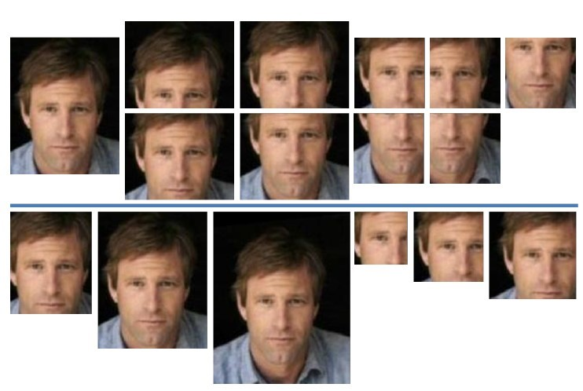
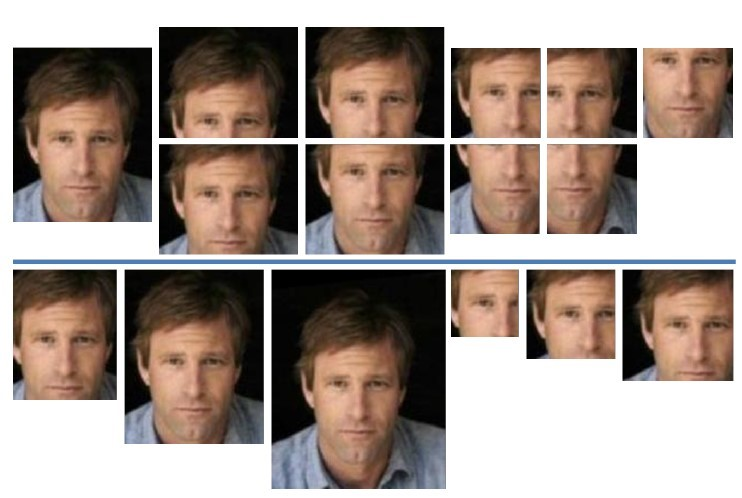
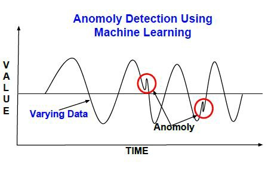

Machine learning
Presentation
prepared by Eugeniy Kuzmin @Syderi
Let's start
Что такое машинное обучение?
Машинное обучение считается ветвью искусственного интеллекта, основная идея которого заключается в том, чтобы компьютер не просто использовал заранее написанный алгоритм, а сам обучился решению поставленной задачи
Кто обучает машину?
Может быть мы? Может быть вы? Оба ответа неверны. Машина обучается на данных! Они называются обучающей выборкой.
• На практике фаза обучения может предшествовать фазе работы алгоритма (например, детектирование лиц на фотокамере)
• Но возможно и дообучение в процессе функционирования алгоритма (например, определение спама).
Application areas
• Computer vision
 

Application areas
continuation
• Speech recognition
• Computational Linguistics and Natural Language Processing

• Medical diagnostics
Application areas
continuation
• Bioinformatics
• Technical diagnostics
• Financial applications
• Mind games
• Big Data
• Artificial Intelligence
• ...
machine learning methods
Supervised learning
Один из разделов машинного обучения. Имеется множество объектов (ситуаций) и множество возможных ответов (откликов, реакций). Существует некоторая зависимость между ответами и объектами, но она неизвестна. Известна только конечная совокупность прецедентов — пар «объект, ответ», называемая обучающей выборкой. На основе этих данных требуется восстановить зависимость, то есть построить алгоритм, способный для любого объекта выдать достаточно точный ответ. Для измерения точности ответов определённым образом вводится функционал качества. Под учителем понимается либо сама обучающая выборка, либо тот, кто указал на заданных объектах правильные ответы.
machine learning methods
Unsupervised learning
Один из разделов машинного обучения . Изучает широкий класс задач обработки данных, в которых известны только описания множества объектов (обучающей выборки), и требуется обнаружить внутренние взаимосвязи, зависимости, закономерности, существующие между объектами.
Neural network
Это последовательность нейронов, соединенных между собой синапсами. Структура нейронной сети пришла в мир программирования прямиком из биологии. Благодаря такой структуре, машина обретает способность анализировать и даже запоминать различную информацию. Нейронные сети также способны не только анализировать входящую информацию, но и воспроизводить ее из своей памяти. Другими словами, нейросеть это машинная интерпретация мозга человека, в котором находятся миллионы нейронов передающих информацию в виде электрических импульсов. Фактически же, нейрон в искусственной нейронной сети представляет собой математическую функцию которой на вход приходит какое-то значение и на выходе получается значение, полученное с помощью той самой математической функции.

Support Vector Machines
SVM — это линейный алгоритм используемый в задачах классификации и регрессии. Данный алгоритм имеет широкое применение на практике и может решать как линейные так и нелинейные задачи. Суть работы “Машин” Опорных Векторов проста: алгоритм создает линию или гиперплоскость, которая разделяет данные на классы.

Boosting
Процедура последовательного построения композиции алгоритмов машинного обучения, когда каждый следующий алгоритм стремится компенсировать недостатки композиции всех предыдущих алгоритмов. В течение последних 10 лет бустинг остаётся одним из наиболее популярных методов машинного обучения. Основные причины — простота, универсальность, гибкость (возможность построения различных модификаций), и, главное, высокая обобщающая способность.

machine learning tasks
- Regressions, Classifications, Clusterings
- Dimension reduction, Anomaly detection

Regressions
Параметры модели настраиваются таким образом, что модель наилучшим образом приближает данные.

Classifications
Требуется построить алгоритм, способный классифицировать произвольный объект из исходного множества.
Clusterings
Задача разбиения заданной выборки объектов (ситуаций) на непересекающиеся подмножества, называемые кластерами, так, чтобы каждый кластер состоял из схожих объектов, а объекты разных кластеров существенно отличались.
Dimension reduction
Позволяет уменьшить размерность данных, потеряв наименьшее количество информации. Применяется во многих областях, таких как распознавание объектов, компьютерное зрение, сжатие данных и т. п. Вычисление главных компонент сводится к вычислению собственных векторов и собственных значений ковариационной матрицы исходных данных или к сингулярному разложению матрицы данных.
Anomaly detection
В анализе данных есть два направления, которые занимаются поиском аномалий: детектирование выбросов и «новизны». Как и выброс «новый объект» — это объект, который отличается по своим свойствам от объектов (обучающей) выборки. Но в отличие от выброса, его в самой выборке пока нет (он появится через некоторое время, и задача как раз и заключается в том, чтобы обнаружить его при появлении). Например, если вы анализируете замеры температуры и отбрасываете аномально большие или маленькие, то Вы боретесь с выбросами. А если Вы создаёте алгоритм, который для каждого нового замера оценивает, насколько он похож на прошлые, и выбрасывает аномальные — Вы «боретесь с новизной».
thank you, all goodbye
Syderi github